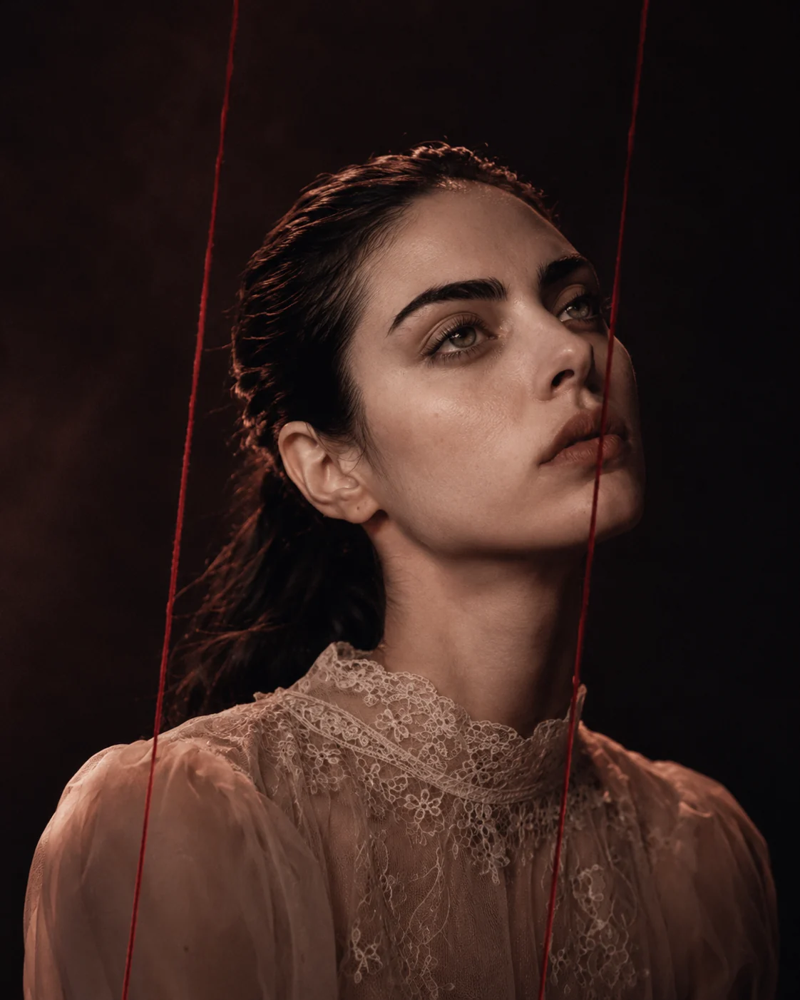

Tratado da
Decadência e
Ascensão das Formas
Vinte e nove movimentos sobre descida, decomposição e recomposição. O novo álbum de AMORFA chega em três dias.
Pré-salvar agora →AMORFA / música, imagem, arquivo.
Um projeto musical brasileiro de pop eletrônico sombrio e música alternativa, construído entre composição, direção visual e experimentação sonora. Discografia, processo e entrevistas organizados abaixo.
Discografia selecionada
O que lança agora, o que vem a seguir, e o catálogo já disponível nas plataformas.
AMORFA / CONVERSAS
Cinco entrevistas sobre processo, autoria, tecnologia e obra — com as edições mais recentes em destaque e o arquivo completo logo abaixo.
Eu entendo AMORFA. Mas sinto como ECCO.
L.A. Kuhn, letrista das faixas de ECCO, fala sobre Por Pouco, vulnerabilidade e o contraponto com AMORFA.
Ler edição 05 →Rituais tem data. O resto ainda pode mudar.
Rituais chega em 11 de setembro; o álbum duplo inspirado nos anos 70 e 80 continua sem título e sem data.
Ler edição 04 →Se você tira a IA, sobra o quê?
IA, direitos, autoria e o álbum de 29 faixas em que AMORFA volta a investigação para dentro.
Ler edição 03 →Ouça o catálogo completo enquanto o Tratado se aproxima.
